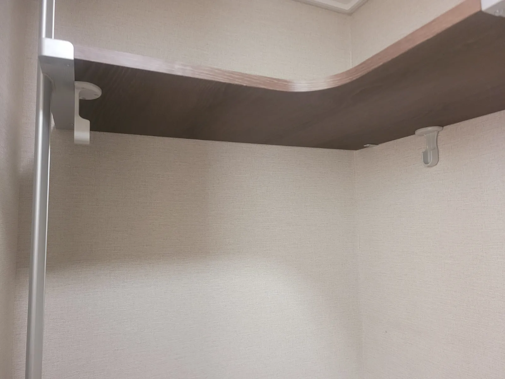

Wall
석고보드 벽
시스템행거 설치
벽 재질을 모르고 고정하면 옷 무게를 오래 버티지 못합니다.
아파트와 오피스텔은 방 사이 벽이 석고보드인 경우가 많습니다. 석고보드는 속이 비어 있어 일반 나사만으로는 선반과 옷 무게를 오래 버티기 어렵고, 시간이 지나면 나사 구멍이 넓어져 선반이 기울 수 있습니다.
코니처는 설치 전에 벽을 두드려 보거나 기존 구멍을 보고 재질을 확인한 뒤, 석고보드에 맞는 고정 방식을 쓰거나 천장·바닥 지지 방식으로 무게를 나눕니다. 콘크리트 벽은 그에 맞는 방법으로 고정합니다.

Situations
벽 재질에 따라 달라지는 점
석고보드 벽
석고보드용 고정 부품을 쓰거나 벽 속 지지대 위치를 찾아 고정합니다.
콘크리트 벽
고정력은 좋지만 타공 위치를 신중히 정합니다.
합판·목재 벽
나사 고정이 잘 되는 편이지만 두께를 확인합니다.
벽 고정이 어려울 때
천장과 바닥을 지지하는 방식으로 설치합니다.
Checklist
벽 재질별 비교
| 벽 재질 | 구분하는 방법 | 고정 방식 |
|---|---|---|
| 석고보드 | 두드리면 속이 빈 소리 | 석고보드용 고정 부품, 벽 속 지지대 활용 |
| 콘크리트 | 단단하고 둔한 소리 | 콘크리트용 고정 |
| 합판·목재 | 나사가 쉽게 들어감 | 두께 확인 후 나사 고정 |
| 타일 | 욕실·베란다와 맞닿은 벽 | 타공 위치를 신중히 정합니다 |
| 잘 모를 때 | 기존 구멍 사진 | 사진으로 먼저 확인합니다 |
Process
벽 고정 설치 순서
벽 사진
설치할 벽과 기존 구멍 사진을 받습니다.
재질 확인
방문해서 벽 재질을 다시 확인합니다.
고정 방식 결정
재질과 무게에 맞는 방식을 정합니다.
설치
정한 방식으로 고정하고 선반을 올립니다.
하중 점검
옷 무게를 걸었을 때 버티는지 확인합니다.
FAQ
자주 묻는 질문
석고보드에 설치해도 괜찮나요?
재질에 맞는 방식으로 고정하면 설치할 수 있습니다. 무거운 부속은 바닥 쪽으로 무게를 나눕니다.
두드려 보면 알 수 있나요?
속이 빈 소리가 나면 석고보드일 가능성이 높습니다. 기존 못 구멍 사진이 있으면 더 정확합니다.
예전 구멍에 다시 박으면 안 되나요?
이미 넓어진 구멍은 고정력이 약해 옆 위치에 새로 고정하는 것이 좋습니다.
벽에 구멍을 안 내고 싶어요
천장·바닥 지지 방식이 가능한 제품인지 사진으로 확인해 드립니다.
구멍이 커져서 선반이 빠졌어요
벽 보수는 하지 않지만, 다른 위치에 다시 고정해 선반을 바로잡을 수 있습니다.